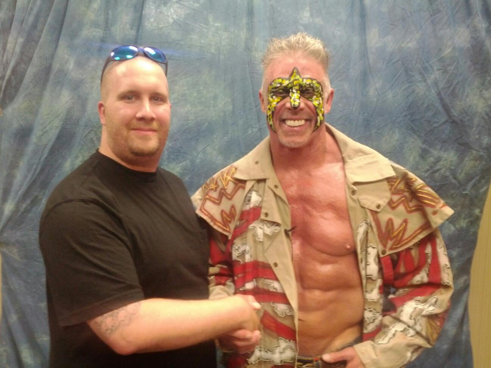

World Wrestling Entertainment, Inc. (WWE)is an American publicly traded, privately controlled entertainment company that deals primarily in professional wrestling, with major revenue sources also coming from film, music, product licensing and direct product sales. WWE also refers to the professional wrestling promotion itself, founded by Jess McMahon and Toots Mondt in 1952 as Capitol Wrestling Corporation. As of 2014, it is the largest wrestling promotion in the world, holding approximately 320 televised and non-televised events a year, and broadcasting to about 36 million viewers in more than 150 countries. The company's headquarters are located in Stamford, CT, with offices in New York City, Los Angeles, London, Shanghai, Tokyo, Singapore, Munich, Mumbai, and Mexico City."
As in other professional wrestling promotions, WWE shows are not legitimate contests, but purely entertainment-based, featuring storyline-driven, scripted, and choreographed matches, though they often include moves that can put performers at risk of injury if not performed correctly. This was first publicly acknowledged by WWE's owner Vince McMahon in 1989 to avoid taxes from athletic commissions. Since the 1980s, WWE publicly branded their product as sports entertainment, which is considered to acknowledge the product's roots in competitive sport and dramatic theater.
The company's majority owner is Vince McMahon, who serves as chairman and CEO of the company. Along with his wife Linda, children Shane and Stephanie, and son-in-law Paul Levesque (known professionally as Triple H), the McMahon family holds approximately 70% of WWE's equity and 96% of the voting power in the company. As of August 2014, due to ongoing problems with the company, Eminence Capital, a New York-based hedge fund, acquired 9.6% stake of WWE while the McMahon family retains 90.4% interest.
The current entity, incorporated on February 21, 1980, was previously known as Titan Sports. It acquired Capitol Wrestling Corporation (the holding company for the World Wrestling Federation, WWF) in 1982 and later formed a separate corporation in Delaware that may have initially been called WWF, Inc. before being renamed Titan Sports, Inc., which then legally merged with the Massachusetts corporation. Titan was renamed World Wrestling Federation, Inc. in 1998, then World Wrestling Federation Entertainment, Inc. in 1999, and finally World Wrestling Entertainment, Inc. in 2002. Since 2011, the company has officially branded itself solely as WWE though the company's legal name was not changed.
Follow WWE by clicking on the icons:
WWE Headquarters in Stamford, CT
Expansion beyond wrestling
In addition to licensing wrestling and performers' likenesses to companies
such as Acclaim, THQ/2K Sports, and Mattel to produce video games and action figures, WWE has moved into other areas of interest in order to market their product.
Active properties:
WWE Libraries: a subsidiary of WWE that owns the largest collection of professional wrestling videos and copyrights for other promotions.
WCW Inc.: a subsidiary created in 2001 that owns the rights to the video library and intellectual property for World Championship Wrestling.
WWE Studios: a subsidiary of WWE created in 2002 to create and develop feature film properties. Formerly known as WWE Films.
WWE Music Group: a subsidiary that specializes in compilation albums of WWE wrestlers' entrance themes. The group also releases titles that have been performed by WWE wrestlers.
WWE Home Video: a subsidiary that specializes in distributing compilation VHS, DVD, and Blu-ray Disc copies of WWE pay-per-view events, compilations of WWE wrestlers' performances, and biographies of WWE performers.
WWE Books: a subsidiary of WWE that serves to publish autobiographies of and fiction based on WWE personalities, behind-the-scenes guides to WWE, illustrated books, calendars, young adult books, and other general "Nonfiction" books.
WWE Performance Center: a subsidiary of WWE that serves as the training and performance center for future employees.
WWE Network: a subscription-based video streaming service launched in 2014 using the infrastructure of Major League Baseball Advanced Media.
WWEShop.com: a website established as the place to buy officially licensed WWE related apparel, gear, and other merchandise.
WWE Jet Services, Inc.: a subsidiary formed in 2013 to manage the financing and operations of the company's fleet of private jets.
Company History
WWE's origins can trace back as far as 1952 when Roderick James "Jess" McMahon and Toots Mondt created the Capitol Wrestling Corporation Ltd. (CWC), which joined the National Wrestling Alliance in 1953. McMahon, who was a successful boxing promoter, began working with Tex Rickard in 1926. With the help of Rickard, he began promoting boxing at the third Madison Square Garden. Though, it was not the first time Jess McMahon promoted wrestling cards and shows as he had already promoted wrestling shows and cards during the 1910s.
In November 1954, Jess McMahon died and Ray Fabiani, one of Mondt's associates, brought in McMahon's son Vincent James McMahon. The younger McMahon and Mondt were very successful and soon controlled approximately 70% of the NWA's booking, largely due to their dominance in the heavily populated Northeast region. In 1963, McMahon and Mondt left the NWA and renamed Capitol, creating the World Wide Wrestling Federation (WWWF), following a dispute with the NWA's over "Nature Boy" Buddy Rogers being booked to hold the NWA's World Heavyweight Championship. Both men left the company in protest following the incident and formed the WWWF in the process, awarding Rogers the new WWWF World Championship in April of that year. He lost the championship to Bruno Sammartino a month later on May 17, 1963, after suffering a heart attack a week before the match.
Capitol operated the WWWF in a conservative manner compared to other pro wrestling territories; it ran its major arenas monthly rather than weekly or bi-weekly, usually featuring a babyface champion wrestling various heels in programs that consisted of one to three matches. After gaining a television program deal and turning preliminary wrestler Lou Albano as a manager for Sammartino's heel opponents, the WWWF was doing sell out business by 1970.
Mondt left Capitol in the late sixties and although the WWWF had withdrawn from the NWA, Vince McMahon, Sr. quietly re-joined in 1971. At the annual meeting of the NWA in 1983, the McMahons and Capitol employee Jim Barnett all withdrew from the organization. Capitol then renamed the World Wide Wrestling Federation to the World Wrestling Federation (WWF) in 1979.
Titan Sports, Inc.
Golden Age
Vincent J. McMahon's son, Vincent K. McMahon, and his wife Linda, founded Titan Sports, Inc., originally in Massachusetts in 1979. The company was incorporated on February 21, 1980 in the Cape Cod Coliseum offices. The younger McMahon bought Capitol from his father in 1982, effectively seizing control of the company. Seeking to make the WWF the premier wrestling promotion in the country, and eventually, the world, he began an expansion process that fundamentally changed the wrestling business. At the same time, it was initially headquartered in Greenwich, CT.
Upon taking over Capitol, McMahon immediately worked to get WWF programming on syndicated television all across the United States. This angered other promoters and disrupted the well-established boundaries of the different wrestling promotions, eventually ending the Territory system, which was in use since the founding of the National Wrestling Alliance in the 1940s. In addition, the company used income generated by advertising, television deals, and tape sales to secure talent from rival promoters.
McMahon gained significant traction when he hired AWA talent Hulk Hogan, who had achieved popularity outside of wrestling, notably for his appearance in the film Rocky III. McMahon signed Roddy Piper as Hogan's rival, and then shortly afterward Jesse Ventura as an announcer. Other wrestlers joined the roster, such as Jimmy Snuka, Don Muraco, The Iron Sheik, Nikolai Volkoff, Junkyard Dog, Paul Orndorff, Greg Valentine and Ricky Steamboat. Many of the wrestlers who would join later were former AWA and/or NWA talent.
The WWF would tour nationally in a venture that would require a huge capital investment, one that placed the WWF on the verge of financial collapse. The future of McMahon's experiment came down to the success or failure of McMahon's groundbreaking concept, WrestleMania. WrestleMania was a major success, and was (and still is) marketed as the Super Bowl of professional wrestling. The concept of a wrestling supercard was nothing new in North America; the NWA had been running Starrcade a few years prior. In McMahon's eyes, however, what separated WrestleMania from other supercards was that it was intended to be accessible to those who did not watch wrestling. He invited celebrities such as Mr. T, Muhammad Ali and Cyndi Lauper to participate in the event, as well as securing a deal with MTV to provide coverage. The event and hype surrounding it led to the term Rock 'n' Wrestling Connection, due to the cross-promotion of pop-culture and professional wrestling.
The WWF business expanded significantly on the shoulders of McMahon and his babyface hero Hulk Hogan for the next several years. The introduction of Saturday Night's Main Event on NBC in 1985 marked the first time that professional wrestling had been broadcast on network television since the 1950s, when the now-defunct DuMont Television Network broadcast matches of Vince McMahon Sr.'s Capitol Wrestling Corporation. The 1980s "Wrestling Boom" peaked with the WrestleMania III pay-per-view at the Pontiac Silverdome in 1987, which set an attendance record of 93,173, a record that still stands today as the largest Wrestlemania crowd in the company's history. A rematch of the Wrestlemania III main event between WWF champion Hulk Hogan and Andre the Giant took place on The Main Event in 1988 and was seen by 33 million people, the most-watched wrestling match in North American television history.
In 1985, Titan moved its offices to its present location in Stamford, Connecticut, before the present building was built nearby in 1991. Subsequently, a new Titan Sports, Inc. (originally WWF, Inc.) was established in Delaware in 1987 and was consolidated with the Massachusetts entity in February 1988.
New Generation (1993 - 1997)
The WWF was hit with allegations of steroid abuse and distribution in 1992 and was followed by allegations of sexual harassment by WWF employees the following year. McMahon was eventually exonerated, but it brought bad public relations for the WWF, and overall bad reputation. The steroid trial cost the company an estimated $5 million at a time of record low revenues. This helped drive many WWF wrestlers over to rival promotion World Championship Wrestling (WCW), including 1980s babyface hero Hulk Hogan. During this period, the WWF promoted wrestlers of a more younger age comprising "The New Generation", featuring Shawn Michaels, Diesel, Razor Ramon, Bret Hart and The Undertaker, in an effort to promote new talent into the spotlight.
In January 1993, the WWF debuted its flagship cable program Monday Night Raw. WCW countered in May 1995 with its own Monday night program, WCW Monday Nitro, which aired in the same time slot as Raw. The two programs would trade wins in the ensuing ratings competition (known as the "Monday Night Wars") until mid-1996. At that point, WCW expanded Nitro to three hours and began a nearly two-year ratings domination that was largely fueled by the introduction of The New World Order (nWo), a stable led by former WWF performers Hulk Hogan, Scott Hall (the former Razor Ramon), and Kevin Nash (the former Diesel).
The Attitude Era (1997 - 2001)
As the Monday Night Wars continued between Monday Night Raw and WCW's Monday Nitro, the WWF would transform itself from a family-friendly product into a more adult oriented product, known as The Attitude Era. The era was spearheaded by WWF VP Shane McMahon (son of owner Vince McMahon) and head writer Vince Russo.
1997 ended with McMahon facing real-life controversy following Bret Hart's controversial departure from the company, dubbed as the Montreal Screwjob.[30] This proved to be one of several founding factors in the launch of the Attitude Era as well as the creation of McMahon's on-screen character, "Mr. McMahon".
Prior to the Montreal Screwjob which took place at the 1997 Survivor Series, former WCW talent were being hired by the WWF, including Stone Cold Steve Austin, Mankind and Vader. Steve Austin was slowly brought in as the new face of the company despite being promoted as an anti-hero, starting with his Austin 3:16 speech shortly after defeating Jake Roberts in the tournament finals at the King of the Ring pay-per-view in 1996.
World Wrestling Federation, Inc./World Wrestling Federation Entertainment, Inc.
On May 6, 1998, Titan Sports, Inc. was renamed World Wrestling Federation, Inc. It was renamed World Wrestling Federation Entertainment, Inc. a year later.
On April 29, 1999, the WWF made its return to terrestrial television by launching a special program known as SmackDown on the fledgling UPN network. The Thursday night show became a weekly series on August 26, 1999—competing directly with WCW's Thursday-night program Thunder on TBS. In 2000 the WWF, in collaboration with television network NBC, announced the creation of the XFL, a new professional football league that debuted in 2001. The league had high ratings for the first few weeks, but initial interest waned and its ratings plunged to dismally low levels (one of its games was the lowest-rated prime-time show in the history of American television). NBC walked out on the venture after only one season, but McMahon intended to continue alone. However, after being unable to reach a deal with UPN, McMahon shut down the XFL.
On October 19, 1999, World Wrestling Federation, Inc. launched an initial public offering as a publicly traded company, trading on the New York Stock Exchange (NYSE) with the issuance of stock then valued at $172.5 million. The company has traded on the NYSE since its launch under ticker symbol WWE.
Acquisition of WCW and ECW
By the fall of 1999, The Attitude Era had turned the tide of the Monday Night Wars into WWF's favor. After Time Warner merged with AOL, Ted Turner's control over WCW was considerably reduced, and the newly merged company announced a complete lack of interest in professional wrestling as a whole, and decided to sell WCW in its entirety. Although Eric Bischoff, whom Time Warner fired as WCW president in October 1999, was nearing a deal to purchase the company, in March 2001 McMahon acquired the rights to WCW's trademarks, tape library, contracts and other properties from AOL Time Warner for a number reported to be around $7 million. Shortly after WrestleMania X-Seven, the WWF launched the Invasion storyline integrating the incoming talent roster from WCW and Extreme Championship Wrestling (ECW). With this purchase, WWF now became by far the largest wrestling promotion in the world. The assets of ECW, which had folded after filing for bankruptcy protection in April 2001, were purchased by WWE in mid-2003.
World Wrestling Entertainment, Inc./WWE
On May 5, 2002, World Wrestling Federation Entertainment announced it was changing both its company name and the name of its wrestling promotion to World Wrestling Entertainment (WWE). Although mainly caused by an unfavorable ruling in its dispute with the World Wide Fund for Nature regarding the "WWF" initialism, the company noted it provided an opportunity to emphasize its focus on entertainment.
Harry "Slash" Grivas and Roderick Kohn had filed a lawsuit against the WWE in June 2003 due to the music being used for its programming and DVDs without consent or payment. It also stated that the rights to original music used by Extreme Championship Wrestling that WWE had been using also during the Invasion storyline of 2001. The case was resolved on both sides with a settlement that saw WWE purchase the catalogue outright in January 2005.
On April 7, 2011, WWE corporate announced that the company was ceasing use of the full name "World Wrestling Entertainment" and would henceforth refer to itself solely as "WWE", making the latter an orphan initialism. This was said to reflect WWE's global entertainment expansion away from the ring with the ultimate goal of acquiring entertainment companies and putting a focus on television, live events, and film production. WWE noted that their new company model was put into effect with the relaunch of Tough Enough, being a non–scripted program (contrary to the scripted nature of professional wrestling) and with the launch of the WWE Network (at the time scheduled to launch in 2012; later pushed back to 2014). However, the legal name of the company remains as "World Wrestling Entertainment, Inc."
Brand Extension
In March 2002, WWE decided to create two separate rosters, Raw and SmackDown due to the overabundance of talent left over from the Invasion storyline. This was dubbed as the WWE Brand Extension. Despite much of the originally drafted talent departing by 2004, WWE continued to separate the shows, taking on younger talent, and holding a Draft Lottery every year. On May 26, 2006, WWE announced the relaunch of Extreme Championship Wrestling as a WWE brand. The new ECW program aired until February 16, 2010.
Beginning with the August 29, 2011, episode of Raw, it was announced that Raw would feature talent from both Raw and SmackDown, and would be known as Raw Supershow (the "Supershow" suffix would be dropped on July 23, 2012). Championships previously exclusive to one show or the other were available for wrestlers from any show to compete for; the "Supershow" format would mark the end of the brand extension, as all programming and live events since the initial announcement was made have featured the full WWE roster.
In 2013, the company built a sports medicine and training center in east Orange County, Florida in partnership with Full Sail University in Winter Park, Florida. The training facility is targeted at career development for wrestlers and athletic development.
WWE Network
On February 24, 2014, WWE launched a 24/7 streaming network. The network includes past and present WWE shows, pay-per-views, and shows from the WWE Library. The network reached 1,000,000 subscribers on January 27, 2015 under one year of its launch, with WWE claiming that it was thus "the fastest-growing digital subscription service ever".
Picture Gallery
Hulk Hogan and myself Rowdy Roddy Piper and myself Iron Sheik and myself Jimmy Snuka and myself Ricky Steamboat and myself Ultimate Warrior and myself Kevin Nash (Diesel) and myself Undertaker and myself Bret Hart and myselfTriple H & Stephanie McMahon. Original photo taken by Miguel Discart
{kind=link}
{kind=link}
{kind=link}
{kind=link}
{kind=link}
{kind=link}
{kind=link}
{kind=link}
{kind=link}
{kind=link}